SỰ NGHIỆP CÁCH MẠNG

- Trang 2 -
Cách Mạng Tháng Tám & Tuyên ngôn Độc lập
Cách Mạng Tháng Tám
“Cách mạng tháng Tám năm 1945” (hay Tổng khởi nghĩa tháng Tám năm 1945) là một cuộc khởi nghĩa do Đảng và Hồ Chí Minh lãnh đạo, diễn ra vào tháng 8 năm 1945, nhằm lật đổ ách thống trị của thực dân Pháp, phát xít Nhật và chế độ phong kiến.
Cách Mạng thánng 8 là chiến công hiển hách và thắng lợi có ý nghĩa lịch sử và thời đại của dân tộc Việt Nam trong thế kỷ XX.
Diễn biến
Các sự kiện trong cuộc Cáng Mạng Tháng 8 diễn ra trong vòng 2-3 tuần tận dụng thời cơ "Ngàn năm có một" trước khi nguy cơ ập đến (Phe Đồng Minh vào Đông Dương vào ngày 30/8).
Ngày 14/8/1945: Tại nhiều địa phương, các cấp bộ Đảng và Việt Minh đã chủ động phát động khởi nghĩa trước khi nhận được lệnh chính thức, căn cứ vào tình hình cụ thể và tinh thần Chỉ thị “Nhật - Pháp bắn nhau và hành động của chúng ta”. Các cuộc khởi nghĩa nổ ra ở khắp nơi, từ các huyện, xã vùng đồng bằng Bắc Bộ đến các tỉnh Thanh Hóa, Nghệ An, Hà Tĩnh, Thừa Thiên Huế, Khánh Hòa...
Ngày 16/8/1945: Theo chỉ đạo của Ủy ban Khởi nghĩa, một đơn vị Giải phóng quân do đồng chí Võ Nguyên Giáp chỉ huy xuất phát từ Tân Trào, tiến về giải phóng thị xã Thái Nguyên - mở màn cho chiến dịch quân sự hỗ trợ tổng khởi nghĩa. Cùng lúc, lực lượng vũ trang Chiến khu Trần Hưng Đạo phối hợp đánh chiếm các địa phương như Hải Ninh, Quảng Yên, Kiến An; ở miền Trung, lực lượng cách mạng tại Quảng Ngãi chiếm dinh tỉnh trưởng ngay trong đêm 16/8 - chính quyền tay sai sụp đổ không kịp trở tay.
Ngày 18/8/1945: Các tỉnh Bắc Giang, Hải Dương, Hà Tĩnh, Quảng Nam là những địa phương đầu tiên giành được chính quyền tại tỉnh lỵ - tạo khí thế bừng bừng khắp cả nước
Ngày 17/8/1945: Tại Hà Nội, hàng vạn quần chúng từ nội, ngoại thành tham gia mít tinh lớn tại Nhà hát Lớn, rồi tuần hành qua các phố trung tâm, hô vang khẩu hiệu “Ủng hộ Việt Minh!”, “Việt Nam độc lập!”
Ngày 19/8/1945: Ở Hà Nội, cuộc tổng khởi nghĩa nổ ra với khí thế áp đảo. Các đội tự vệ chiến đấu và quần chúng cách mạng chiếm phủ Khâm sai Bắc Bộ, Sở Cảnh sát, Sở Bưu điện, Trại Bảo an binh...; chính quyền Bảo Đại - Trần Trọng Kim tan rã. Đêm đó, chúng ta hoàn toàn làm chủ Thủ đô. Khởi nghĩa thắng lợi ở Hà Nội.
Ngày 21/8/1945: Ở Huế, hàng loạt cuộc biểu tình thị uy diễn ra, tạo thế áp đảo. Ngày 23/8/1945, hàng vạn người tiến vào thành phố, chiếm các công sở trọng yếu và giành chính quyền trong hòa bình. Khởi nghĩa ở Huế giành thắng lợi.
Ngày 25/8/1945: Các đoàn công nhân, nông dân, thanh niên từ Gia Định, Biên Hòa, Thủ Dầu Một, Mỹ Tho đổ về trung tâm thành phố. Quần chúng chiếm lĩnh Sở Mật thám, Sở Cảnh sát, Bưu điện, nhà ga, nhà máy điện..., chính quyền bù nhìn nhanh chóng sụp đổ, chính quyền cách mạng được thiết lập
Thắng lợi vang dội tại ba đô thị lớn: Hà Nội, Huế, Sài Gòn đã tạo hiệu ứng lan tỏa mạnh mẽ. Từ thành thị đến nông thôn, từ miền xuôi đến miền ngược, từ đất liền đến hải đảo - phong trào khởi nghĩa dâng lên như vũ bão
Ngày 28/8/1945: Đồng Nai Thượng và Hà Tiên là hai tỉnh cuối cùng giành được chính quyền.
Ngày 30/8/1945: Vua Bảo Đại tuyên bố thoái vị, chấm dứt hoàn toàn chế độ phong kiến kéo dài hàng nghìn năm.
⇒ Chỉ trong vòng 15 ngày, từ giữa đến cuối tháng 8 năm 1945, cuộc Tổng khởi nghĩa đã giành thắng lợi hoàn toàn trên phạm vi cả nước..
Kết quả
Cách mạng Tháng Tám năm 1945 diễn ra và giành thắng lợi. Nhân dân ta đã đập tan ách phát xít Nhật, lật đổ ách thống trị của thực dân Pháp hơn 80 năm, xóa bỏ chế độ phong kiến hàng nghìn năm, giành quyền độc lập dân tộc, thành lập Nhà nước Cộng hòa Dân chủ, đưa nhân dân lên vị trí làm chủ đất nước. Đất nước, dân tộc, nhân dân ta bước vào kỷ nguyên mới – kỷ nguyên độc lập dân tộc gắn liền với chủ nghĩa xã hội
Ý nghĩa
Đối với sự nghiệp giải phóng dân tộc, giải phóng giai cấp ở Việt Nam: Thắng lợi của Cách mạng Tháng Tám năm 1945 đã mở ra bước ngoặt vĩ đại của cách mạng, đưa dân tộc Việt Nam bước sang kỷ nguyên mới - kỷ nguyên độc lập dân tộc gắn liền với chủ nghĩa xã hội; nhân dân ta từ thân phận nô lệ đã trở thành người làm chủ đất nước, làm chủ vận mệnh của mình. Đánh giá về ý nghĩa lớn lao này, Chủ tịch Hồ Chí Minh đã khẳng định: “Cách mạng Tháng Tám đã lật đổ nền quân chủ mấy mươi thế kỷ, đã đánh tan xiềng xích thực dân gần 100 năm, đã đưa chính quyền lại cho nhân dân, đã xây nền tảng cho nước Việt Nam Dân chủ Cộng hòa, độc lập, tự do, hạnh phúc. Đó là một cuộc thay đổi cực kỳ to lớn trong lịch sử của nước ta”.
Tiếp tục nhấn mạnh giá trị đó, trong Bài phát biểu tại khóa họp Xô viết Tối cao Liên Xô nhân kỷ niệm 40 năm Cách mạng tháng Mười, ngày 6-11-1957 đăng trên báo Nhân dân, số 1341, ngày 10-11-1957, Người lại khẳng định: “Năm 1945, nhân dân Việt Nam đã làm Cách mạng Tháng Tám, đánh đuổi bọn thực dân ra khỏi đất nước và xây dựng chính quyền nhân dân. Đó là một bước ngoặt trong lịch sử của dân tộc chúng tôi”. Thắng lợi này đã chính thức chấm dứt ách đô hộ hơn 80 năm của thực dân Pháp đối với nước ta, mở kỷ nguyên độc lập, lần đầu tiên tên nước Việt Nam có tên bản đồ thế giới; đồng thời đã mở ra mối quan hệ ngoại giao với các nước trên thế giới với tư cách và vị thế của một quốc gia - dân tộc có độc lập, có chủ quyền: “Lịch sử dân tộc ta đã có nhiều thời kỳ rất vẻ vang.
Nhưng trước ngày Cách mạng Tháng Tám, dân tộc ta đã phải trải qua gần một thế kỷ vô
cùng tủi nhục. Trên địa đồ thế giới, tên nước ta đã bị xóa nhòa dưới bốn chữ “Đông Dương thuộc Pháp”. Thực
dân Pháp gọi đồng bào ta là lũ Annamít dơ bẩn. Thiên hạ gọi chúng ta là vong quốc nô. Cụ Phan Bội Châu đã
phải thốt lên rằng:
Đã lắm lúc bầm gan tím ruột,
Vạch trời cao mà tuốt gươm ra,
Cũng xương, cũng thịt, cũng da,
Cũng hòn máu đỏ, con nhà Lạc Long,
Thế mà chịu trong vòng trói buộc,
Mấy mươi năm nhơ nhuốc lầm than!...
Cách mạng Tháng Tám thành công. Nước Việt Nam Dân chủ Cộng hòa ra đời. Kháng chiến chống thực dân Pháp thắng
lợi. Nhân dân ta tự làm chủ vận mạng của mình. Tên tuổi của nước ta lại lẫy lừng khắp năm châu, bốn biển”.
Đối với phong trào giải phóng dân tộc trên thế giới: Cách mạng tháng Tám năm 1945 thắng lợi là tấm gương, là nguồn cổ vũ cho các quốc gia - dân tộc đang mất độc lập tự do ở châu Á, châu Phi và Mỹ La-tinh, nhất là các nước láng giềng noi theo. Khẳng định vị thế, giá trị thời đại của thắng lợi này, Chủ tịch Hồ Chí Minh viết: “Cách mạng Tháng Tám thắng lợi đã làm cho chúng ta trở nên một bộ phận trong đại gia đình dân chủ thế giới. Cách mạng Tháng Tám có ảnh hưởng trực tiếp và rất to đến hai dân tộc bạn là Miên và Lào. Cách mạng Tháng Tám thành công, nhân dân hai nước Miên, Lào cùng nổi lên chống đế quốc và đòi độc lập”.
Đối với phong trào cộng sản và công nhân quốc tế: Thắng lợi của Cách mạng tháng Tám năm 1945 mang tầm vóc thời đại, góp phần to lớn vào phong trào đấu tranh vì hòa bình, tiến bộ của nhân loại; giáng một đòn chí mạng vào nền móng của chủ nghĩa thực dân cũ ở vị trí xung yếu nhất; cùng với Liên Xô, các lực lượng tiến bộ trên thế giới và quân đồng minh đánh đổ chủ nghĩa thực phát xít, giữ vững hòa bình cho khu vực và trên thế giới. Tinh thần của chiến thắng lịch sử. Do đó, cũng là chiến thắng chung của các nước trên bán đảo Đông Dương, chiến thắng của phong trào cộng sản và công nhân quốc tế, của phong trào đấu tranh vì hòa bình, tiến bộ xã hội trên toàn thế giới.
Nguồn: Bộ Quốc Phòng Nước Cộng Hoà Xã Hội Chủ Nghĩa Việt Nam, Cơ quan chủ quản: Văn phòng Trung ương Đảng và Tạp Chí Cộng Sản
Tuyên Ngôn Độc Lập
Bối cảnh
Trong công cuộc cách mạng tháng Tám thành công (vỏn vẹn 2 tuần), Bác Hồ từ chiến khu Việt Bắc về Hà Nội và nghỉ tại thôn Phú Gia, xã Phú Thượng, Từ Liêm (nay là Phú Thượng, Tây Hồ). Sau đó, Bác về ở tại căn nhà số 48 phố Hàng Ngang, Hà Nội. Tại ngôi nhà này, trong những ngày cuối tháng 8 năm 1945, Người đã dành phần lớn thời gian để soạn thảo bản Tuyên ngôn Độc lập.
Ngày 2/9/1945, tại Quảng trường Ba Đình (Hà Nội), hơn 50 vạn người đại diện cho mọi tầng lớp nhân dân hân hoan chờ đón thời khắc lịch sử của dân tộc. Sau lễ chào cờ, Chủ tịch Hồ Chí Minh thay mặt Chính phủ lâm thời, trịnh trọng đọc bản Tuyên Ngôn Độc Lập.
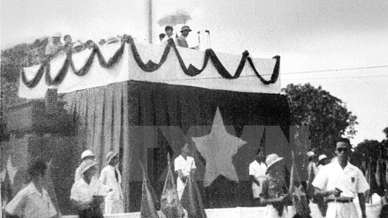Tóm tắt
• Khẳng định các quyền cơ bản của con người như: quyền sống, quyền tự do, quyền mưu cầu hạnh phúc.
• Vạch trần tội ác của phát xít Nhật và thực dân Pháp.
• Tuyên bố với thế giới về nền độc lập của dân tộc Việt Nam và quyết tâm bảo vệ nền độc lập ấy.
Ý nghĩa
Tuyên ngôn độc lập là một văn bản pháp lý khẳng định các quyền của con người cũng như dân tộc Việt Nam. Tuyên ngôn Độc lập cũng đánh dấu sự kết thúc của chế độ thực dân phong kiến quân chủ tồn tại hàng nghìn năm ở Việt Nam, mở ra một thời đại mới - thời đại giải phóng dân tộc, tiến lên chủ nghĩa xã hội.
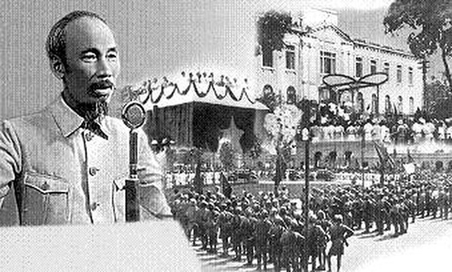Nguồn: Thư Viện Pháp Luật Việt Nam và Báo Quân khu 3
Việt Nam năm 1945: Nạn đói, Nạn dốt
Bối cảnh năm 1948 - Sau Cách Mạng Tháng 8
“Nạn đói năm Ất Dậu” cuối năm 1944 - đầu năm 1945 là nạn đối lớn xảy ra tại miền Bắc Việt Nam đã cướp đi sinh mạng của hơn hai triệu người và ở nước ta.

Nguyên nhân
Tháng 10/1940, Nhật thi hành hàng loạt chính sách đánh vào nền kinh tế: buộc thực dân Pháp phải ký kết nhiều hiệp ước yêu cầu cung cấp lương thực, giao nộp lúa, gạo cho Nhật hàng năm; cấm vận chuyển lương thực từ Nam ra Bắc, hạn chế chuyên chở tự do, chỉ cho chở dưới 50 cân gạo trong một tỉnh; bắt người dân nhổ lúa trồng đay, dành ruộng trồng lạc. Trong khi Nhật vơ vét cho chiến tranh thì Pháp dự trữ lương thực phòng khi quân Đồng minh chưa tới,phải đánh Nhật hoặc dùng cho cuộc tái xâm lược Việt Nam. Thuế đinh, thuế điền, tô tức trở thành những chiếc thòng lọng buộc vào cổ nông dân.
Năm 1944, Việt Nam bị mất mùa nhưng Pháp và chính quyền phong kiến vẫn phải cung cấp cho Nhật hơn 900.000 tấn gạo để nuôi chiến tranh phát xít và làm nguyên liệu để người Pháp nấu rượu, cùng thóc dùng đốt lò thay cho than đá.
Nhật cấm vận chuyển lúa từ miền Nam ra, vơ vét thóc ở miền Bắc khiến giá thóc, gạo tăng vọt.Năm 1943, một tạ gạo giá chính thức là 31 đồng, giá chợ đen là 57 đồng; năm 1944 tăng lên 40 đồng, giá chợ đen là 350 đồng, nhưng đến đầu năm 1945 thì giá chính thức vọt lên 53 đồng còn giá chợ đen từ 700-800 đồng. Giá gạo "phi nước đại" khiến người dân không đủ sức mua, phải chịu cảnh chết đói.
Tháng 9/1944, lụt vỡ đê La Giang (Hà Tĩnh), đê sông Cả (Nghệ An) làm cho nạn đói diễn ra trầm trọng hơn.Theo những người dân trải qua nạn đói khủng khiếp ở Tây Lương (Tiền Hải, Thái Bình) thì vụ mùa năm 1944, lúa trên các cánh đồng rộng hàng trăm mẫu đều bị "rù" (rầy phá hoại), chết trắng, chết vàng. Cả mẫu ruộng không thu nổi vài chục cân thóc mẩy.
Chủ trương của Bác
Tại phiên họp đầu tiên của Chính phủ lâm thời nước Việt Nam Dân chủ cộng hòa, vào ngày 03/09/1945 Chủ tịch Hồ Chí Minh đã nêu ra 6 vấn đề mang tính cấp thiết, trong đó vấn đề cứu đói được đặt lên đầu tiên.
Phát biểu tại phiên họp, Chủ tịch Hồ Chí Minh cho rằng:
“Hiện nay những vấn đề gì là vấn đề cấp bách hơn cả. Theo ý tôi, có 6 vấn đề. Một là, nhân dân đang đói. Ngoài những kho thóc của Pháp, Nhật vơ vét của nhân dân, bọn Nhật, Pháp còn bắt đồng bào chúng ta giảm bớt diện tích để trồng thầu dầu, đay và những thứ cây khác cần thiết cho cuộc chiến tranh của chúng... Hơn hai triệu đồng bào chúng ta đã chết đói vì chính sách độc ác này. Vừa rồi nạn lụt đã phá hoại 8 tỉnh sản xuất lúa gạo... Chúng ta phải làm thế nào để cho họ sống… Tôi đề nghị với Chính phủ là phát động một chiến dịch tăng gia sản xuất. Tôi đề nghị mở một cuộc lạc quyên. Mười ngày một lần, tất cả đồng bào chúng ta nhịn ăn một bữa. Gạo tiết kiệm được sẽ góp lại và phát cho người nghèo”.
Tinh thần này đã được quán triệt và triển khai với tinh thần thống nhất cao trong Chính phủ mà đứng đầu là Chủ tịch Hồ Chí Minh. Chính sự thống nhất cao từ Chính phủ và người đứng đầu mà phong trào đã được triển khai nhanh chóng, rộng khắp tới toàn xã hội
Để triển khai và nhân rộng tinh thần này đối với toàn xã hội, Chủ tịch Hồ Chí Minh kêu gọi cả nước lập “hũ gạo cứu đói”.
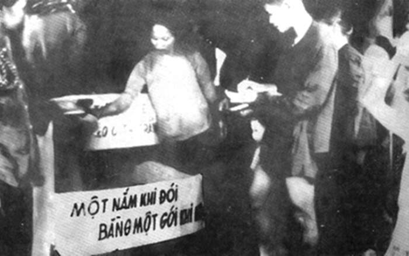Ngày 28/9/1945, Bác Hồ viết bài kêu gọi “sẻ cơm nhường áo” đăng trên Tờ Cứu quốc:
“Hỡi đồng bào yêu quý, từ tháng giêng đến tháng bảy năm nay, ở Bắc Bộ ta đã có hai triệu người chết đói. Kế đó lại bị nước lụt, nạn đói càng tăng thêm, nhân dân càng khốn khổ. Lúc chúng ta nâng bát cơm mà ăn, nghĩ đến kẻ đói khổ, chúng ta không khỏi động lòng. Vậy tôi xin đề nghị với đồng bào cả nước, và tôi xin thực hành trước: Cứ 10 ngày nhịn ăn một bữa, mỗi tháng nhịn 3 bữa. Đem gạo đó (mỗi bữa một bơ) để cứu dân nghèo. Như vậy, thì những người nghèo sẽ có bữa rau bữa cháo để chờ mùa lúa năm sau, khỏi đến nỗi chết đói. Tôi chắc rằng đồng bào ta ai cũng sẵn lòng cứu khổ cứu nạn, mà hăng hái hưởng ứng lời đề nghị nói trên. Tôi xin thay mặt dân nghèo mà cảm ơn các đồng bào”
Theo lời bác Hoàng Văn Tí - người giúp việc Bác Hồ trong những năm 1945 kể lại: Hưởng ứng việc lập “hũ gạo cứu đói”, Bác Hồ gương mẫu thực hiện mười ngày nhịn ăn một bữa, dành gạo giúp người nghèo. Nhìn Bác gầy rộc, ăn uống không đều đặn, các đồng chí giúp việc rất lo cho sức khoẻ của Bác nên đề nghị Bác không nên nhịn ăn nhưng Bác lại bảo: “Bác kêu gọi đồng bào mười ngày nhịn ăn một bữa thì Bác cũng phải gương mẫu chứ, các chú nói Bác cứ ăn thì làm gương cho ai được”
Kết quả sản lượng hoa màu đã tăng gấp bốn lần so với thời kỳ Pháp thuộc. Chỉ trong 5 tháng, từ tháng 11/1945 đến tháng 5/1946 đã đạt 614.000 tấn, quy ra thóc là 506.000 tấn, hoàn toàn có thể bù đắp được số thiếu hụt của vụ mùa năm 1945. Bằng chứng rõ nhất là dân không đói, giá thóc gạo không tăng mà lại giảm. Giặc đói đã bị đánh lui.
Ngày nay đất nước đã có nhiều thay đổi, đời sống nhân dân được cải thiện rõ rệt, ngày càng ấm no hạnh phúc, nhất là từ khi thực hiện đường lối đổi mới do Ðảng khởi xướng và lãnh đạo. Tuy nhiên, một bộ phận đồng bào vẫn còn rất khó khăn, đặc biệt tỷ lệ hộ nghèo ở miền núi, vùng sâu, vùng xa, tỷ lệ này còn cao gấp hai, gấp ba. Phong trào "Hũ gạo tình thương" được Bác Hồ phát động ngày nào nay vẫn duy trì và phát triển dưới nhiều hình thức đa dạng và sáng tạo ở nhiều địa phương trong cả nước, thể hiện truyền thống đoàn kết nhân ái, đùm bọc nhau của dân tộc ta.
Tấm gương của Chủ tịch Hồ Chí Minh trong phong trào “Hũ gạo cứu đói” diễn ra đã hơn 70 năm nhưng giá trị của nó vẫn còn có ý nghĩa lớn lao đối với hiện nay. Tấm gương của Người trong phong trào chống giặc đói với biện pháp cụ thể đã có một sự lan tỏa cao đối với toàn xã hội lúc bấy giờ. Đây chính là nguyên nhân quan trọng để tập hợp được sức mạnh đoàn kết, vượt qua những cam go.
Nguồn: Quân Đội Nhân Dân Việt Nam, Tạp chí Lý luận chính trị và Truyền thông và Báo VnExpress
Chiến khu Việt Bắc 1947
Bối cảnh
Ngày 2/9/1945, giữa lúc nhân dân Sài Gòn mít tinh chào mừng ngày Độc lập thì một số tên lính Pháp còn ẩn náu trong Thành phố, đã xả đạn vào đồng bào ta, làm hàng chục người chết và bị thương.
Ngày 23/9, được quân Anh và quân Nhật hỗ trợ, quân Pháp tiến công Sài Gòn, bắt đầu cuộc chiến tranh xâm lược lại nước ta. Quân và dân Nam Bộ được cả nước chi viện, đã chặn đánh quyết liệt, gây cho quân Pháp nhiều thiệt hại và làm phá sản chiến lược đánh nhanh, thắng nhanh của chúng.
Ngày 12/12/1946, Ban Thường vụ Trung ương Đảng ra Chỉ thị Toàn dân kháng chiến
Lời kêu gọi toàn quốc kháng chiến
Đêm 19/12/1946, Chủ tịch Hồ Chí Minh thay mặt Trung ương Đảng và Chính phủ ra Lời kêu gọi toàn quốc kháng chiến.
Chiến dịch Việt Bắc – Thu Đông năm 1947
Chiến dịch Việt Bắc Thu Đông năm 1947 là chiến dịch phản công đầu tiên của Quân đội nhân dân Việt Nam trong cuộc kháng chiến chống thực dân Pháp, diễn ra dưới sự lãnh đạo của Trung ương Đảng và Chủ tịch Hồ Chí Minh. Chiến thắng này có ý nghĩa chiến lược to lớn, đánh dấu bước trưởng thành của quân đội ta và mở ra giai đoạn mới cho cuộc kháng chiến.
Âm mưu và kế hoạch của thực dân Pháp
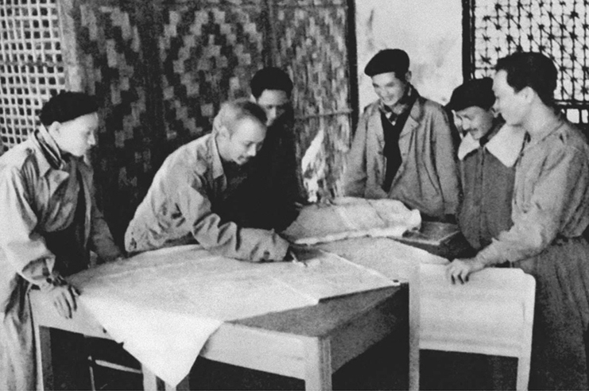Đầu năm 1947, sau khi thất bại với “giải pháp chính trị”, thực dân Pháp quyết định mở cuộc tiến công quân sự quy mô lớn lên căn cứ địa Việt Bắc, trung tâm đầu não của cuộc kháng chiến.
Kế hoạch do tướng Salan soạn thảo gồm hai bước:
• Bước 1 – Léa: Dùng hai gọng kìm bao vây Việt Bắc, trọng tâm là khu tam giác Bắc Kạn – Chợ Đồn – Chợ Mới.
Cánh quân hướng Đông: Từ Lạng Sơn lên Cao Bằng, vòng xuống Bắc Kạn. Cánh quân hướng Tây: Từ sông Hồng ngược
sông Lô, sông Gâm lên Tuyên Quang, Chiêm Hóa.
• Bước 2 – Cloclo: Càn quét khu tam giác Bắc Kạn – Chợ Chu – Chợ Mới, lấy Chợ Chu làm trọng điểm.Lực lượng
tham chiến hơn 10.000 quân, gồm 5 trung đoàn bộ binh, 2 tiểu đoàn dù, pháo binh, cơ giới, 40 máy
bay và 40 tàu chiến. Mục tiêu: Bắt cơ quan đầu não Việt Minh, tiêu diệt chủ lực, phá căn cứ Việt Bắc, khóa
chặt biên giới Việt –
Trung và dập tắt cuộc kháng chiến trong vòng ba tuần.
Sự chuẩn bị và chủ trương của ta
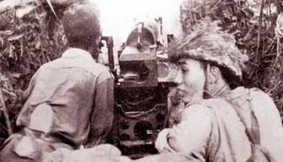Trước nguy cơ đó, Hội nghị Quân sự toàn quốc lần thứ ba (12–15/6/1947) và Hội nghị Bộ Tổng chỉ huy (27–29/9/1947) xác định:
Nhiệm vụ: “Phá tan kế hoạch tiêu diệt quân ta của địch, bảo vệ cơ quan đầu não, giữ vững chủ lực, tiêu diệt từng bộ phận quân địch.”
Mệnh lệnh tác chiến (4/10/1947): Phân công nhiệm vụ cụ thể cho các lực lượng, chuẩn bị sẵn sàng chiến đấu trên các hướng trọng điểm.
Lực lượng tham gia: 7 trung đoàn bộ binh, các đơn vị khu 1, 10, 12, 30 đại đội độc lập cùng dân quân du kích 5 tỉnh Cao Bằng, Bắc Kạn, Lạng Sơn, Thái Nguyên, Tuyên Quang.
Chỉ huy trưởng: Đại tướng Võ Nguyên Giáp.
Diễn biến chính của chiến dịch
Ngày 7/10/1947, quân Pháp mở cuộc tiến công bằng hai gọng kìm lên Việt Bắc. Lúc đầu, ta bị bất ngờ và chịu một số tổn thất. Tuy nhiên, ngày 13/10/1947, ta thu được kế hoạch tiến công của địch từ máy bay Pháp bị bắn rơi ở Cao Bằng, nên kịp thời điều chỉnh chiến thuật.
Ta chủ trương đưa bộ đội độc lập về địa phương, phát động chiến tranh du kích rộng khắp, lập ba mặt trận: Sông Lô – đường 2, Bắc Kạn – đường 3, đường 4, đánh mạnh ở sông Lô và đường 4, đồng thời tiêu hao, chia cắt và tiêu diệt từng cánh quân địch. Các trận đánh lớn: Bông Lau (30/10), Chợ Đồn (21/10), Sông Lô (23–24/10 và 11/11/1947),…
Kết quả: Bị tổn thất nặng nề, từ ngày 21/11/1947, Pháp phải rút quân khỏi Việt Bắc.
Ta tiếp tục truy kích, thắng các trận Phủ Thông (30/11), Sơn Dương, Bình Ca, Đèo Khế, Phan Lương, Đèo Giàng (15/12). Ngày 20/12/1947, chiến dịch kết thúc thắng lợi.
Kết quả và ý nghĩa
• Tiêu diệt hơn 7.200 quân địch, bắn rơi 18 máy bay, đánh chìm 54 tàu chiến, phá hủy 255 xe quân sự, thu 25 khẩu pháo và nhiều vũ khí khác. Ta hy sinh 260 người, bị thương 168 người.
• Chiến dịch phá tan cuộc tiến công mùa Đông của Pháp, bảo vệ vững chắc cơ quan đầu não kháng chiến, đồng thời nâng cao sức chiến đấu và vị thế của quân đội ta.
⇒ Đây là chiến dịch phản công đầu tiên của Quân đội nhân dân Việt Nam, khẳng định bước trưởng thành lớn về nghệ thuật chỉ huy, tổ chức và tác chiến.
Nghệ thuật quân sự và ý nghĩa lịch sử
• Mục tiêu đúng đắn, toàn diện, cụ thể: Bảo vệ căn cứ địa Việt Bắc, bảo toàn lực lượng. Lựa chọn loại hình phản công linh hoạt, kết hợp tác chiến du kích và phản công chủ động.
• Mục tiêu đúng đắn, toàn diện, cụ thể: Bảo vệ căn cứ địa Việt Bắc, bảo toàn lực lượng.
• Phân bố lực lượng hợp lý, tiêu hao địch từng phần, phá thế bao vây. Chuyển nhanh từ thế bị động sang chủ động chiến đấu, tạo thế chủ động trên chiến trường rừng núi.
⇒ Chiến thắng Việt Bắc Thu Đông 1947 mang ý nghĩa chính trị và quân sự to lớn, củng cố niềm tin của toàn dân và quân đội vào Đảng và Chủ tịch Hồ Chí Minh, khẳng định thắng lợi của đường lối chiến tranh nhân dân, mở đầu cho thời kỳ phản công chủ động trong kháng chiến chống Pháp.
Nguồn: Báo Nhân Dân
Chiến Thắng Điện Biên Phủ 1954
Trong lịch sử dựng nước và giữ nước của dân tộc Việt Nam, chiến thắng Điện Biên Phủ là một trong những đỉnh cao chói lọi, một kỳ tích vẻ vang. Trong cuộc kháng chiến chống thực dân Pháp, chiến thắng lịch sử Điện Biên Phủ là chiến thắng vĩ đại nhất, giáng đòn quyết định, tạo bước ngoặt làm thay đổi cục diện chiến tranh trực tiếp đưa đến việc ký kết Hiệp định Giơnevơ chấm dứt chiến tranh, lập lại hòa bình ở Đông Dương.
Ngay sau khi Cách mạng tháng Tám thắng lợi, thực dân Pháp được sự hỗ trợ của các thế lực đế quốc đã quay trở lại xâm lược nước ta. Ngày 19/12/1946, đáp lời Lời kêu gọi toàn quốc kháng chiến của Hồ Chủ tịch, nhân dân Việt Nam đã anh dũng bước vào cuộc kháng chiến trường kỳ, gian khổ chống kẻ thù xâm lược.
Dựa vào sức mình là chính, với vũ khí thô sơ và tinh thần “cảm tử cho Tổ quốc quyết sinh”, quân và dân ta đã lần lượt đánh bại các chiến lược quân sự của thực dân Pháp. Đến năm 1953, chúng ta đã làm chủ trên các chiến trường, tạo ra sự so sánh lực lượng có lợi cho ta. Để cứu vãn tình thế, thu – đông năm 1953, thực dân Pháp và can thiệp Mỹ đã triển khai Kế hoạch Nava tăng cường binh lực và phương tiện chiến tranh, mưu toan trong vòng 18 tháng sẽ tiêu diệt phần lớn bộ đội chủ lực của ta, kiểm soát lãnh thổ Việt Nam, giành lại thế chủ động trên chiến trường. Khi phát hiện hướng tiến công chiến lược của ta vào Tây Bắc, Lai Châu và Thượng Lào, Bộ chỉ huy quân viễn chinh Pháp đã cho quân nhảy dù chiếm Điện Biên Phủ, xây dựng nơi đây thành căn cứ quân sự kiên cố.
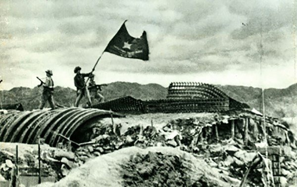Diễn biến
Tháng 9/1953, Bộ Chính trị họp bàn và quyết định mở cuộc tiến công chiến lược đông - xuân với phương châm: tích cực, chủ động, cơ động, linh hoạt, tiêu diệt sinh lực địch, bồi dưỡng lực lượng ta, chọn nơi sơ hở và nơi xung yếu của địch mà đánh, đẩy mạnh chiến tranh du kích, giữ vững thế chủ động, buộc địch phải phân tán lực lượng. Quân và dân ta đã phối hợp với quân và dân Lào, Campuchia liên tiếp mở chiến dịch và giành thắng lợi ở Lai Châu, Tây Nguyên, Trung Lào, Hạ Lào, Thượng Lào và Đông Campuchia, tiêu diệt nhiều sinh lực địch, mở rộng vùng giải phóng buộc quân Pháp lâm vào tình thế bị động chiến lược, phải phân tán lực lượng để đối phó trên khắp các chiến trường.
Điện Biên Phủ là cứ điểm có ý nghĩa chiến lược khống chế cả một vùng rộng lớn của Tây Bắc và Thượng Lào. Tập đoàn cứ điểm Điện Biên Phủ được bố trí thành 3 phân khu Bắc, Trung, Nam với 49 cứ điểm, huy động toàn bộ lính dù và 40% lực lượng cơ động tinh nhuệ nhất của Pháp ở Đông Dương; hai sân bay Mường Thanh và Hồng Cúm. Tập đoàn cứ điểm Điện Biên Phủ là tập đoàn cứ điểm phòng ngự mạnh nhất của Pháp ở Đông Dương lúc bấy giờ, như “một pháo đài không thể công phá”, là nơi thu hút để tiêu diệt bộ đội chủ lực của ta và là quyết chiến điểm của Kế hoạch Nava.
Ngày 6/12/1953, Bộ Chính trị họp và nhận định, đánh Điện Biên Phủ là một trận công kiên lớn nhất của quân đội ta từ trước tới nay và có ý nghĩa quân sự, chính trị và ngoại giao rất quan trọng. Trên tinh thần đó, Bộ Chính trị đã quyết định mở Chiến dịch Điện Biên Phủ, thông qua phương án tác chiến, thành lập Bộ Chỉ huy chiến dịch, Đảng uỷ mặt trận do Đại tướng Võ Nguyên Giáp làm Tư lệnh kiêm Bí thư Đảng uỷ chiến dịch.
Ngày 25/1/1954, các đơn vị bộ đội ta ở vị trí tập kết sẵn sàng nổ súng theo phương châm tác chiến “đánh nhanh, giải quyết nhanh”. Nhưng nhận thấy địch đã tăng cường lực lượng phòng ngự vững chắc, Bộ Chỉ huy và Đảng uỷ chiến dịch đã đưa ra quyết định mới: giữ vững quyết tâm tiêu diệt tập đoàn cứ điểm Điện Biên Phủ, thay đổi phương châm tác chiến sang “đánh chắc, tiến chắc”.
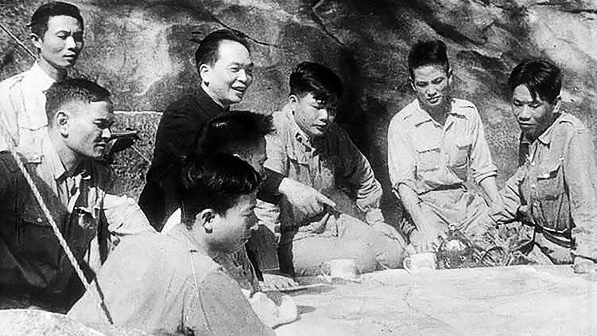Đợt 1
Từ ngày 13 đến 17/3/1954, quân ta đã dũng cảm tiêu diệt gọn cứ điểm Him Lam và đồi Độc Lập, bức hàng cứ điểm Bản Kéo, phá vỡ cửa ngõ phía bắc của tập đoàn cứ điểm, diệt và bắt sống trên 2000 tên địch, phá hủy 25 máy bay, xóa sổ 1 trung đoàn, uy hiếp sân bay Mường Thanh
Đợt 2
Từ ngày 30/3 đến ngày 30/4/1954, quân ta đồng loạt tiến công các cứ điểm phía đông phân khu trung tâm, thắt chặt vòng vây, chia cắt và liên tục tiến công, kiểm soát sân bay Mường Thanh, hạn chế tiếp viện của địch cho tập đoàn cứ điểm. Đặc biệt tại đồi C1 ta và địch giằng co nhau tới 20 ngày, đồi A1 giằng co tới 30 ngày.
Đợt 3
Từ ngày 1/5 đến ngày 7/5/1954, quân ta đánh chiếm các cứ điểm phía đông và mở đợt tổng công kích. Đêm ngày 6/5, tại đồi A1 trận chiến đấu giữa ta và địch diễn ra quyết liệt, quân ta xông lên tiêu diệt từng lô cốt, nổ phá từng hầm ngầm. Tên quan tư chỉ huy đồi A1 và khoảng 400 tên địch còn sống sót đã ra đầu hàng.
17 giờ 30 phút ngày 7/5, ta chiếm sở chỉ huy trung tâm, tướng De Castries cùng toàn bộ Bộ Tham mưu và binh lính tập đoàn cứ điểm Điện Biên Phủ kéo cờ trắng ra hàng. Lá cờ “quyết chiến, quyết thắng” của quân đội ta tung bay trên nóc hầm chỉ huy của địch. Ngay trong đêm đó quân ta tiếp tục tiến công phân khu Nam, đánh địch tháo chạy về Thượng Lào, đến 24 giờ toàn bộ quân địch đã bị bắt làm tù binh.
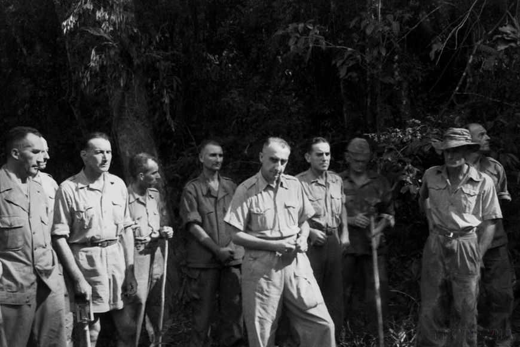Kết quả
Sau 55 ngày đêm chiến đấu dũng cảm, mưu trí, sáng tạo quân và dân ta đã đập tan toàn bộ tập đoàn cứ điểm Điện Biên Phủ, tiêu diệt và bắt sống 16.200 tên, bắn rơi 62 máy bay, thu 64 ô tô và toàn bộ vũ khí, đạn dược, quân trang, quân dụng của địch.
Trong cuộc kháng chiến chống thực dân Pháp, chiến thắng lịch sử Điện Biên Phủ là chiến thắng vĩ đại nhất, giáng đòn quyết định, tạo bước ngoặt làm thay đổi cục diện chiến tranh trực tiếp đưa đến việc ký kết Hiệp định Giơnevơ chấm dứt chiến tranh, lập lại hòa bình ở Đông Dương.
Giá trị và ý nghĩa của chiến thắng Điện Biên Phủ
Chiến thắng Điện Biên Phủ đã kết thúc thắng lợi cuộc kháng chiến chống thực dân Pháp và can thiệp Mỹ; chấm dứt hoàn toàn ách xâm lược của thực dân Pháp trên bán đảo Đông Dương; bảo vệ và phát triển thành quả Cách mạng tháng Tám; giải phóng miền Bắc, tạo cơ sở vững chắc để tiến lên giành thắng lợi trong cuộc kháng chiến chống đế quốc Mỹ giải phóng miền Nam, thống nhất Tổ quốc.
Chiến thắng Điện Biên Phủ đã củng cố niềm tin tưởng vào sự lãnh đạo của Đảng Cộng sản Việt Nam; cổ vũ toàn Đảng, toàn dân, toàn quân chiến đấu dưới lá cờ vẻ vang của Đảng vì độc lập, tự do của Tổ quốc, vì hạnh phúc của nhân dân.
Đây là sự kiện thắng lợi vẻ vang, mang tầm vóc thời đại, góp phần to lớn vào phong trào đấu tranh vì hoà bình, tiến bộ của nhân loại. Chứng minh một chân lý của thời đại: các dân tộc bị áp bức, bị xâm lược nếu có ý chí kiên cường và đường lối đúng đắn, sáng tạo, biết đoàn kết đấu tranh vì độc lập tự do thì dân tộc đó nhất định giành thắng lợi.
Kháng chiến chống Mỹ trong những năm 1960-1970
Từ giữa những năm 60 của thế kỷ XX, cuộc kháng chiến chống Mỹ, cứu nước của nhân dân Việt Nam bước vào thời kỳ mới với những khó khăn, thử thách quyết liệt.
Bối cảnh sau Genève 1954
Hiệp định Genève 1954 tạm thời chia cắt Việt Nam ở vĩ tuyến 17, mở ra thời kỳ hai miền đi theo hai con đường khác nhau. Từ đây, mâu thuẫn chính trị – xã hội ngày càng gay gắt, đặt nền cho cuộc đấu tranh giành độc lập, thống nhất đất nước.
Chia cắt hai miền & chính sách của Mỹ ở miền Nam
Sau Hiệp định Genève, Việt Nam tạm thời bị chia cắt ở vĩ tuyến 17: miền Bắc bước vào khôi phục kinh tế, cải tạo xã hội chủ nghĩa; miền Nam đặt dưới chính quyền Ngô Đình Diệm với sự hậu thuẫn toàn diện từ Mỹ (cố vấn, viện trợ, huấn luyện quân đội).
Tại miền Nam, chính quyền Sài Gòn tổ chức trưng cầu, lập chế độ Việt Nam Cộng hòa (1955) và bác bỏ tổng tuyển cử thống nhất năm 1956. Mỹ – Diệm đẩy mạnh “tố cộng, diệt cộng”, ban hành Luật 10/59, lập tòa án quân sự đặc biệt, trấn áp các lực lượng cách mạng và phong trào yêu nước.
Những biện pháp an ninh – bình định ở nông thôn, chính sách dồn dân, kiểm soát gắt gao đã làm bùng phát mâu thuẫn xã hội, xâm phạm lợi ích của nông dân và thị dân nghèo. Sự đàn áp kéo dài khiến phong trào đấu tranh chính trị phát triển, đồng thời thúc đẩy nhu cầu chuyển thế đấu tranh ở miền Nam.
Hệ quả là tương quan chính trị – quân sự dần thay đổi: cơ sở cách mạng kiên trì bám dân, tích lũy lực lượng, chuẩn bị cho bước chuyển mới của cuộc kháng chiến chống Mỹ – Ngụy.
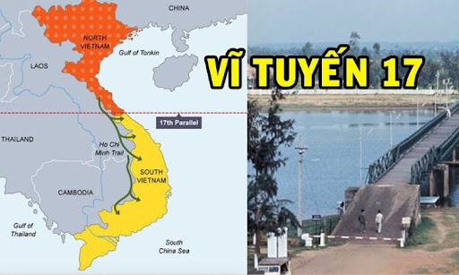Phong trào Đồng khởi (1959–1960)
Bối cảnh đàn áp quyết liệt cùng yêu cầu tự vệ của quần chúng đặt ra nhu cầu thay đổi phương thức đấu tranh. Nghị quyết 15 (1959) mở đường kết hợp đấu tranh chính trị với đấu tranh vũ trang, tạo cơ sở pháp lý – tổ chức cho phong trào bùng nổ.
Tháng 1/1960, Đồng Khởi nổ ra mạnh mẽ ở Bến Tre, với hình ảnh “đội quân tóc dài” tiêu biểu: phụ nữ, nông dân, thanh niên đồng loạt đứng lên, phối hợp lực lượng vũ trang địa phương đánh vào hệ thống kìm kẹp ở cơ sở. Nhiều xã, ấp giành được quyền làm chủ, chính quyền tay sai bị tê liệt ở không ít nơi.
Từ Bến Tre, làn sóng lan nhanh khắp Nam Bộ, lên Tây Nguyên và một số vùng Trung Trung Bộ. Cùng với đấu tranh chính trị, lực lượng du kích phát triển, địa bàn căn cứ mở rộng, hệ thống “tề, ngụy” ở nông thôn bị phá vỡ từng mảng.
Đường Trường Sơn – hậu cần chiến lược
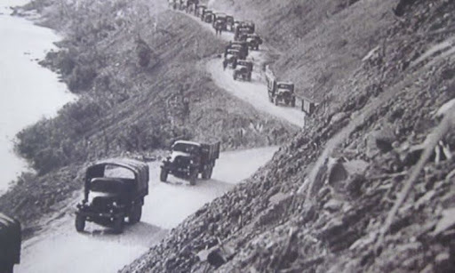Trước yêu cầu chi viện cho chiến trường miền Nam, Đoàn 559 được thành lập (1959) để mở tuyến vận tải chiến lược Trường Sơn (còn gọi là đường mòn Hồ Chí Minh). Nhiệm vụ trung tâm: đưa người, vũ khí, lương thực, thuốc men và trang bị kỹ thuật từ hậu phương lớn miền Bắc vào các chiến trường.
Từ những lối mòn ban đầu, hệ thống đường ngày càng hoàn chỉnh với đường bộ, đường sông, bến bãi, “binh trạm”, trạm sửa chữa, kho tàng, bệnh xá và mạng thông tin liên lạc. Công tác ngụy trang, nghi binh, bảo đảm kỹ thuật được tổ chức chặt chẽ, phù hợp điều kiện rừng núi, khí hậu khắc nghiệt.
Đường Trường Sơn thường xuyên hứng chịu đánh phá bằng không quân, hỏa lực tầm xa và chất độc hóa học. Bộ đội Trường Sơn, công binh, phòng không, thanh niên xung phong và dân công hỏa tuyến phối hợp mở đường, sửa đường, chống lầy, rà phá bom mìn; vận tải kết hợp gùi thồ, xe cơ giới, thuyền bè. Từ cuối những năm 1960, tuyến ống xăng dầu được xây dựng, nâng mạnh năng lực chi viện.
Nhờ tuyến hậu cần chiến lược này, khối lượng vật chất – kỹ thuật, nhân lực vào Nam tăng đều qua các năm, bảo đảm thế trận liên hoàn Bắc – Trung – Nam. Đường Trường Sơn trở thành “mạch máu” của chiến tranh nhân dân, góp phần quyết định tạo thế và lực cho cách mạng miền Nam tiến tới thắng lợi.
Chiến tranh đặc biệt (1961–1965)
Đây là chiến lược Mỹ dựa vào quân đội Sài Gòn, cố vấn và hỏa lực hiện đại (trực thăng, thiết giáp), cùng chương trình “ấp chiến lược” để bình định nông thôn. Tuy nhiên, trước thế trận chiến tranh nhân dân và các đòn đánh then chốt của lực lượng cách mạng, “Chiến tranh đặc biệt” dần bị bẻ gãy, buộc Mỹ chuyển sang “Chiến tranh cục bộ” năm 1965.
Mỹ đặt mục tiêu “dùng người Việt đánh người Việt”, hạn chế quân Mỹ trực tiếp tham chiến để giảm tổn thất và rủi ro chính trị. Trọng tâm là viện trợ kinh tế – quân sự, đưa cố vấn xuống tận đơn vị, tăng cường trinh sát – thông tin, và áp dụng chiến thuật cơ động nhanh.
Nội dung chủ yếu gồm: bình định nông thôn, xây dựng “ấp chiến lược”, phát triển lực lượng biệt kích – dân vệ, đẩy mạnh trực thăng vận/thiết xa vận, càn quét – lùng sục nhằm “tát nước bắt cá”. Song song, khủng bố, chiêu hồi và chiến tranh tâm lý được triển khai để phá cơ sở cách mạng.
“Ấp chiến lược” được xem như “xương sống” của bình định: dồn dân vào ấp có hàng rào, đồn bốt, kiểm soát ra vào, tách dân khỏi lực lượng cách mạng. Chính quyền vận động, cưỡng bức di dời, lập tề, cấp thẻ, tổ chức canh gác và kiểm soát lương thực.
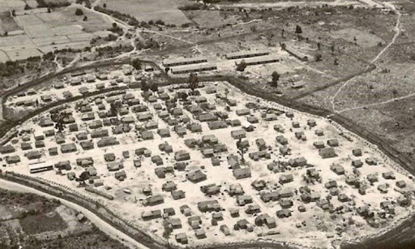Tuy nhiên, mô hình này xâm phạm quyền lợi nông dân, gây bất bình và làm đứt gãy sinh kế. Cơ sở cách mạng bám dân, vừa vận động chính trị, vừa “phá ấp, phá kìm” có trọng điểm; nhiều ấp bị bỏ trống hoặc sụp đổ nhanh sau 1963 khi chính trường Sài Gòn rối loạn. “Áo giáp” bình định rạn nứt, nông thôn từng bước nghiêng về phía cách mạng.
Mỹ – Sài Gòn dựa nhiều vào trực thăng vận, thiết xa vận và hỏa lực mạnh để đánh nhanh, bao vây – chia cắt, truy kích lực lượng vũ trang địa phương. Lực lượng biệt kích, trinh sát, dân vệ phối hợp lùng sục, kiểm soát các trục giao thông và khu vực trọng điểm.
Phía cách mạng phát huy chiến tranh du kích: “bám đất, bám dân”, đánh nhỏ, đánh gần, đánh hiểm; gài mìn, phục kích, bắn tỉa, chia cắt đội hình cơ động. Khi có điều kiện, chủ lực tập trung đánh tiêu diệt từng bộ phận, kết hợp “ba mũi giáp công” (chính trị – quân sự – binh vận) để phá vỡ vòng vây và mở rộng vùng làm chủ.
Những trận then chốt bẻ gãy “Chiến tranh đặc biệt”:
• Ấp Bắc (1/1963, Định Tường): Lực lượng vũ trang địa phương giữ vững trận địa, bắn rơi nhiều trực thăng,
diệt phương tiện cơ giới, làm thất bại một cuộc càn lớn. Trận thắng gây tiếng vang, chứng minh có thể đánh
bại chiến thuật trực thăng vận.
• Bình Giã (12/1964–1/1965, Phước Tuy): Chủ lực ta chủ động tìm diệt, gây thiệt hại nặng cho đơn vị tinh
nhuệ của quân đội Sài Gòn. Chiến thắng cho thấy ta có khả năng đánh vận động quy mô lớn, làm lung lay niềm
tin vào khả năng “đè bẹp” cách mạng bằng hỏa lực.
• Ba Gia (5/1965, Quảng Ngãi) – Đồng Xoài (6/1965, Phước Long): Liên tiếp các đòn tiến công tiêu diệt từng
mảng chủ lực đối phương, phá vỡ các mũi bình định. Tương quan lực lượng và thế trận ở nhiều địa bàn chuyển
lợi cho ta, khiến chiến lược đặc biệt mất dần hiệu lực.
Khủng hoảng chính trị Sài Gòn và tác động
Năm 1963 bùng nổ khủng hoảng Phật giáo, biểu tình quy mô lớn và đảo chính lật đổ Ngô Đình Diệm. Từ đó, nội bộ chính quyền Sài Gòn bất ổn, đảo chính liên miên, bộ máy kìm kẹp suy yếu, bình định đình trệ. Năm 1963 bùng nổ khủng hoảng Phật giáo, biểu tình quy mô lớn và đảo chính lật đổ Ngô Đình Diệm. Từ đó, nội bộ chính quyền Sài Gòn bất ổn, đảo chính liên miên, bộ máy kìm kẹp suy yếu, bình định đình trệ.
Leo thang và chiến tranh cục bộ (1965–1968)
Mỹ đổ quân trực tiếp vào miền Nam, dựa vào hỏa lực vượt trội và chiến thuật “tìm diệt” để nhanh chóng xoay chuyển cục diện. Song trước thế trận chiến tranh nhân dân và sức bền hậu phương, chiến lược này vấp phải những đòn đánh quyết định, buộc Mỹ phải xuống thang vào năm 1968.
Đầu 3/1965, Thủy quân Lục chiến Mỹ đổ bộ vào Đà Nẵng, mở màn cho “chiến tranh cục bộ”. Mục tiêu của Washington là tiêu diệt lực lượng chủ lực của ta, giành lại quyền kiểm soát nông thôn và áp đặt “bình định” bằng sức mạnh quân sự.
Cách đánh chủ yếu là “tìm diệt” (search and destroy): trực thăng vận, thiết xa vận, hỏa lực pháo binh – không quân áp đảo, hành quân càn quét quy mô lớn. Tướng Westmoreland theo đuổi “chiến tranh tiêu hao”, kỳ vọng ưu thế công nghệ sẽ bẻ gãy ý chí kháng chiến trong thời gian ngắn.
Song song với việc đổ quân ở miền Nam, Mỹ mở rộng ném bom miền Bắc (Sấm Rền) nhằm đánh vào giao thông, công nghiệp và hậu cần. Mục tiêu là cắt đứt chi viện qua Trường Sơn, làm suy yếu hậu phương lớn.
Miền Bắc triển khai phòng không nhiều tầng: cao xạ, tên lửa, không quân, kết hợp ngụy trang – phân tán lực lượng, vừa sản xuất vừa chiến đấu. Tuyến vận tải Trường Sơn được mở rộng cả đường bộ, đường sông, đường ống xăng dầu, bảo đảm mạch chi viện thông suốt.
Những trận – chiến dịch tiêu biểu 1965–1967
Vạn Tường (8/1965, Quảng Ngãi): Trận đầu đụng độ lớn với Thủy quân Lục chiến Mỹ. Ta chủ động phục kích – vây ép, gây tổn thất đáng kể và rút ra nhiều kinh nghiệm đối phó trực thăng – thiết giáp.
Plây Me – Ia Đrăng (10–11/1965, Tây Nguyên): Đụng độ quy mô sư đoàn – lữ đoàn đầu tiên giữa bộ đội chủ lực ta và quân Mỹ. Địa hình rừng núi, chiến thuật bám gần, chia cắt đội hình cơ động khiến ưu thế hỏa lực của Mỹ bị hạn chế.
Junction City (2–5/1967, Chiến khu C – Tây Ninh): Chiến dịch nhảy dù – càn quét lớn nhất của Mỹ nhằm “tìm diệt” cơ quan đầu não kháng chiến ở miền Nam. Ta kiên trì cơ động, đánh tập kích – phục kích, làm phá sản ý đồ tiêu diệt quyết định của đối phương.
Cuối 1967, ta chủ động tạo thế nghi binh – giam chân đối phương trên nhiều hướng, trong đó có Đường 9 – Khe Sanh. Rạng sáng Tết Mậu Thân 1968, lực lượng cách mạng đồng loạt tiến công vào nhiều đô thị và căn cứ quân sự trọng yếu trên toàn miền Nam.
Tại Sài Gòn, Huế và một số thành phố lớn, chiến sự diễn ra ác liệt, kéo dài nhiều ngày. Dù ta chịu nhiều tổn thất, đòn tiến công chiến lược đã làm rung chuyển thế “bình định”, gây chấn động dư luận Mỹ và quốc tế, tạo bước ngoặt về chính trị – tâm lý của cuộc chiến.
Sau Mậu Thân, Mỹ buộc phải điều chỉnh: ngày 31/3/1968 Tổng thống Johnson tuyên bố hạn chế ném bom miền Bắc và chấp nhận đàm phán. Hội nghị Paris khai mạc (5/1968), mở mặt trận ngoại giao song hành với đấu tranh quân sự. “Chiến tranh cục bộ” lộ rõ giới hạn: không đạt mục tiêu tiêu diệt lực lượng cách mạng, không giữ được nông thôn, chi phí tổn thất tăng cao. Đây là tiền đề để Mỹ chuyển dần sang chiến lược mới sau 1968 và từng bước xuống thang chiến tranh.
Đóng góp của Bác trong cuộc kháng chiến chống Mỹ
Ở miền Nam, đầu năm 1965, mặc dù bị thất bại trong chiến lược “Chiến tranh đặc biệt”, nhưng đế quốc Mỹ vẫn chưa chịu từ bỏ âm mưu, thủ đoạn xâm lược Việt Nam, chuyển sang thực hiện chiến lược “Chiến tranh cục bộ”, ồ ạt đưa quân Mỹ và quân đồng minh đổ bộ vào chiến trường miền Nam Việt Nam.
Những sư đoàn, lữ đoàn tinh nhuệ này là lực lượng chiến lược chủ yếu, trực tiếp tiến hành chiến tranh ở miền Nam. Với số quân khổng lồ, được trang bị vũ khí kỹ thuật hiện đại, đế quốc Mỹ đã thực hiện hai cuộc phản kích mùa khô 1965-1966 và 1966-1967, càn quét vùng giải phóng và căn cứ kháng chiến, hòng tiêu diệt lực lượng chủ lực và cơ quan lãnh đạo kháng chiến của ta, với những tuyên bố ngông cuồng “sẽ giết cộng sản nhanh tới mức Bắc Việt không kịp thay quân”.
Trong Lời kêu gọi được Đài Tiếng nói Việt Nam truyền đi sáng 17-7-1966, Chủ tịch Hồ
Chí Minh tố cáo đanh thép:
“Đế quốc Mỹ dã man, gây ra chiến tranh xâm lược hòng ăn cướp nước ta... Chúng ồ
ạt mang gần 30 vạn quân viễn chinh vào miền Nam nước ta. Chúng nuôi dưỡng ngụy quyền ngụy quân làm công cụ
hại dân phản nước. Chúng dùng những phương tiện chiến tranh cực kỳ man rợ, như chất độc hóa học, bom
napan... Chúng dùng chính sách đốt sạch, giết sạch, phá sạch. Bằng những tội ác ấy, chúng hòng khuất phục
đồng bào miền Nam ta” .
Ở miền Bắc, đế quốc Mỹ “khác nào con thú dữ bị thương nặng, giãy giụa một cách hung tợn”. Để cứu nguy cho sự thất bại nặng nề của ngụy quyền Sài Gòn trước những đòn tấn công của Quân Giải phóng; nhằm phá tiềm lực kinh tế, quốc phòng, phá công cuộc xây dựng chủ nghĩa xã hội ở miền Bắc; đồng thời ngăn chặn nguồn chi viện từ miền Bắc vào miền Nam, năm 1964, sau khi dựng lên “sự kiện vịnh Bắc Bộ”, đế quốc Mỹ lấy cớ leo thang mở rộng chiến tranh phá hoại miền Bắc.
Trắng trợn, liều lĩnh và điên cuồng, Mỹ sử dụng sức mạnh không quân và hải quân với những phương tiện và vũ khí hiện đại, tối tân đánh vào các mục tiêu quân sự, dân sự, nhà máy, trường học, bệnh viện, nhà thờ, đường giao thông... ở Thủ đô Hà Nội và các thành phố lớn, các khu công nghiệp, phá hoại hệ thống giao thông của miền Bắc. Chúng huênh hoang tuyên bố “đưa miền Bắc trở về thời kỳ đồ đá”.
Chủ tịch Hồ Chí Minh cho rằng, Mỹ “có thể đưa 50 vạn quân, 1 triệu quân hoặc nhiều
hơn nữa... Chúng có thể dùng hàng nghìn máy bay tăng cường đánh phá miền Bắc”. Mặc dù phải đương đầu với kẻ
thù có sức mạnh vượt trội về kinh tế và quân sự, nhưng với tình yêu nước vĩ đại, với ý chí không cam chịu
khuất phục cường quyền, với khát khao giành độc lập dân tộc hoàn toàn, triệt để, thống nhất đất nước, Chủ
tịch Hồ Chí Minh đã khơi dậy một niềm tin tất thắng của nhân dân Việt Nam vào cuộc kháng chiến chống Mỹ, cứu
nước. Người khẳng định:
“Chiến tranh có thể kéo dài 5 năm, 10 năm, 20 năm hay lâu hơn nữa; Hà Nội, Hải Phòng
và một số thành phố, xí nghiệp có thể bị tàn phá, song nhân dân Việt Nam quyết không sợ! Không có gì quý
hơn
độc lập, tự do. Đến ngày thắng lợi, nhân dân ta sẽ xây dựng lại đất nước ta đàng hoàng hơn, to đẹp hơn”;
“Nhân dân Việt Nam nhất định thắng! Giặc Mỹ xâm lược nhất định thua! Việt Nam hòa bình, thống nhất, độc
lập,
dân chủ và giàu mạnh muôn năm!”.
Người khẳng định, nhiệm vụ thiêng liêng của toàn dân ta lúc này là phải nâng cao tinh thần quyết chiến quyết thắng, quyết tâm giải phóng miền Nam, bảo vệ miền Bắc, tiến tới hòa bình thống nhất Tổ quốc: “Hễ còn một tên xâm lược trên đất nước ta, thì ta còn phải tiếp tục chiến đấu, quét sạch nó đi”.
Trong không khí thiêng liêng chuyển giao của đất trời đêm Giao thừa năm 1969, Chủ
tịch Hồ Chí Minh một lần nữa truyền đi thông điệp mạnh mẽ với niềm tin quyết chiến, quyết thắng:
“Năm qua
thắng lợi vẻ vang
Năm nay tiền tuyến chắc càng thắng to
Vì độc lập, vì tự do
Đánh cho Mỹ cút,
đánh cho
ngụy nhào
Tiến lên! Chiến sĩ, đồng bào
Bắc - Nam sum họp xuân nào vui hơn”.
Trước lúc đi xa, một trong những điều quan tâm lớn nhất, cũng là những trăn trở lớn
nhất trong cuộc đời cách mạng của Chủ tịch Hồ Chí Minh, đó là miền Nam chưa được giải phóng, đất nước chưa
được thống nhất. Nhưng đọc Di chúc - những lời căn dặn cuối cùng của Người, chúng ta vẫn thấy cháy lên một
niềm tin mãnh liệt vào sự toàn thắng của cách mạng. Trong bản thảo năm 1965, Người viết:
“Cuộc kháng chiến
chống Mỹ có thể sẽ kéo dài mấy năm nữa. Đồng bào ta có thể phải hy sinh nhiều của, nhiều người. Dù sao,
chúng ta phải quyết tâm đánh giặc Mỹ đến thắng lợi hoàn toàn. Còn non, còn nước, còn người
Thắng giặc
Mỹ
ta sẽ xây dựng hơn 10 ngày nay.”.
Người nhắc đi nhắc lại hai từ “nhất định”:
“Dù khó khăn, gian khổ đến mấy,
nhân dân ta nhất định sẽ hoàn toàn thắng lợi. Đế quốc Mỹ nhất định phải cút khỏi nước ta. Tổ quốc ta nhất
định sẽ thống nhất. Đồng bào Bắc - Nam nhất định sẽ sum họp một nhà”.
Niềm tin ở Chủ tịch Hồ Chí Minh vào thắng lợi tất yếu của cuộc kháng chiến chống đế quốc Mỹ không phải là niềm tin mơ hồ, mà đó là niềm tin cách mạng, khoa học, dựa trên sự phân tích bối cảnh, tình hình cụ thể, nắm bắt được quy luật và xu hướng vận động của chiến tranh.
Người còn xây dựng một bản thiết kế toàn diện về việc kiến thiết đất nước sau khi chiến tranh kết thúc, đất nước thống nhất, đó là những công việc như: Xây dựng và chỉnh đốn Đảng, chăm lo đến cuộc sống cho nhân dân; xây dựng lại thành phố và làng mạc, khôi phục và mở rộng các ngành kinh tế, phát triển công tác vệ sinh, y tế, sửa đổi chế độ giáo dục, củng cố quốc phòng, chuẩn bị việc thống nhất Tổ quốc...
Trước hết, Chủ tịch Hồ Chí Minh tin ở sự lãnh đạo của Đảng - “người lãnh đạo xứng đáng nhất và đáng tin cậy nhất của nhân dân Việt Nam”. “Đảng ta luôn luôn đứng vững trên lập trường giai cấp vô sản, tuyệt đối trung thành với lợi ích của giai cấp và của nhân dân, biết vận dụng lý luận Mác - Lênin vào tình hình thực tế của nước ta và đề ra đường lối, chính sách đúng đắn”. Với tư cách là lực lượng lãnh đạo, Đảng sẽ đưa ra được những chủ trương, đường lối đúng đắn để tập hợp mọi lực lượng yêu nước và tiến bộ trong Mặt trận dân tộc thống nhất, thực hiện đoàn kết dân tộc để đấu tranh chống đế quốc như Đảng đã từng làm trong lịch sử để giành lấy những thắng lợi to lớn.
Chủ tịch Hồ Chí Minh tin ở sức mạnh của nhân dân, của truyền thống dân tộc. Người khẳng định, không thể lay chuyển được chí khí sắt đá, quyết tâm chống Mỹ, cứu nước của nhân dân Việt Nam; “đồng bào miền Nam anh hùng vẫn không hề mảy may nao núng và sẽ không bao giờ nao núng! Như đổ thêm dầu vào lửa, những tội ác cực kỳ man rợ của giặc Mỹ và bọn tay sai chỉ làm sục sôi thêm chí căm thù của nhân dân ta trong cả nước. Vì Tổ quốc thân yêu, vì miền Nam ruột thịt, vì chủ nghĩa xã hội, quân và dân ta ở miền Bắc đã có một tinh thần chiến đấu rất cao, một sức chiến đấu rất mạnh”.
Chủ tịch Hồ Chí Minh tin ở sự ủng hộ, giúp đỡ của các lực lượng yêu chuộng hòa bình trên thế giới. Người khẳng định: “Trước âm mưu tội ác mới của đế quốc Mỹ, tôi tin chắc rằng nhân dân và chính phủ các nước xã hội chủ nghĩa anh em, các nước yêu chuộng hòa bình và chính nghĩa trên thế giới càng ra sức ủng hộ và giúp đỡ hơn nữa nhân dân Việt Nam chống Mỹ, cứu nước đến thắng lợi hoàn toàn”. Trước khi rời xa chúng ta, Người đã thay mặt nhân dân Việt Nam trân trọng cảm ơn nhân dân thế giới, trong đó có cả nhân dân Mỹ, chính phủ các nước anh em, bè bạn quốc tế khắp năm châu, đã hết lòng ủng hộ và giúp đỡ có hiệu quả cho cuộc kháng chiến chống xâm lược chính nghĩa của nhân dân Việt Nam.
Niềm tin mãnh liệt của Chủ tịch Hồ Chí Minh đã khơi dậy tinh thần cách mạng to lớn của toàn Đảng, toàn quân và toàn dân với những cố gắng, nỗ lực vượt bậc về tinh thần, ý chí, quyết tâm đưa cách mạng đến thắng lợi cuối cùng. Người đã truyền cho toàn Đảng, toàn dân và toàn quân ta niềm tin mãnh liệt vào sức mạnh vĩ đại của dân tộc Việt Nam, sức mạnh của chính nghĩa và chân lý: "Không có gì quý hơn độc lập, tự do", sức mạnh của chủ nghĩa yêu nước và chủ nghĩa anh hùng cách mạng Việt Nam.
Đại thắng mùa Xuân năm 1975 là chiến công oanh liệt trong lịch sử dựng nước và giữ nước của dân tộc, làm thất bại hoàn toàn cuộc chiến tranh xâm lược và ách thống trị thực dân mới của đế quốc Mỹ ở miền Nam, giải phóng hoàn toàn miền Nam, thống nhất đất nước. Đó là kết quả từ sự lãnh đạo tài tình với đường lối đúng đắn của Đảng; là sự ủng hộ to lớn của các lực lượng yêu chuộng hòa bình trên thế giới; và đặc biệt là ở sức mạnh của nhân dân Việt Nam, ở sức mạnh truyền thống của dân tộc Việt Nam được thực hiện bằng niềm tin tất thắng mà Chủ tịch Hồ Chí Minh là người đã khơi dậy, truyền đi, cổ vũ, phát huy.
Bác mất - Lăng Chủ tịch
Những ngày cuối
Trở lại thời gian lúc 6 giờ ngày 12/8/1969, Bác Hồ gặp đồng chí Lê Đức Thọ tại nhà nghỉ Hồ Tây để nghe báo cáo tình hình Hội nghị Paris. Đêm hôm đó, Bác lên cơn sốt và ho, rồi những ngày sau, Bác ho nhiều hơn, sốt nặng hơn. Nhưng Bác vẫn lên xuống Nhà sàn gắng gượng làm việc.
Theo đề nghị của bác sĩ, tối 17/8/1969, Bác Hồ không làm việc ở Nhà sàn nữa, Người xuống ở và làm việc tại ngôi nhà nhỏ phía sau Nhà sàn. Đây là ngôi nhà mà Bộ Chính trị đã quyết định làm cho Bác trong những ngày tháng 5/1967 khi Bác sang Trung Quốc để chữa bệnh, với mục đích để bảo đảm an toàn cho Bác trong những năm máy bay giặc Mỹ bắn phá Hà Nội.
Một ngày Bác ốm nặng, nhưng Bác rất vui khi nghe báo cáo về Nghị quyết của Bộ Chính trị về kỷ niệm 4 ngày lễ lớn trong năm 1970. Bác nói với một đồng chí Ủy viên Bộ Chính trị: “Các chú nên bàn cho kỹ, còn ý kiến của Bác, Bác không đồng ý đưa ngày 19/5 là ngày kỷ niệm lớn trong năm 1970 (ngày 19/5 chính là ngày sinh nhật Bác). “Hiện nay, các cháu học sinh sắp bước vào năm học mới, giấy mực, tiền bạc dùng để tuyên truyền về ngày sinh của Bác thì các chú nên dành để in sách giáo khoa và mua dụng cụ học tập cho các cháu, khỏi lãng phí...”, Bác dặn. Có lẽ, chưa lúc nào Bác dành một chút ưu tiên nào cho bản thân. Bởi hơn ai hết, Bác hiểu nỗi khổ của Dân, hiểu được chiến tranh còn nhiều gian khổ.
Những ngày tháng 8 năm 1969, trời mưa to, mực nước sông Hồng lên cao, trong lúc Bác đang lâm bệnh, Trung ương mời Bác lên ATK (an toàn khu) đề phòng đê sông Hồng vỡ gây lụt lội. Nhưng Bác bảo: “Bác không thể bỏ Dân, trước hết hãy lo cho Dân”. Vì vậy, Trung ương đã chuẩn bị xe lội nước để đưa Bác lên ATK nếu Hà Nội bị lụt và đằng sau xe Bác có nhiều xe lội nước khác để cứu dân.
Ngày 02/09/1969
Ngày 29/8/1969, Bác nói với Thủ tướng Phạm Văn Đồng rằng Lễ Quốc khánh, Bác sẽ ra dự mươi mười lăm phút.
Ngày 01/9/1969, Bác rất mệt, cũng có lúc tỉnh táo và nhanh nhẹn hơn, tự tay bưng và ăn được chén con long nhãn.
Nhưng 9 giờ ngày 02/9/1969, Bác bị một cơn đau tim rất nặng. Các giáo sư, bác sĩ Việt Nam và Trung Quốc phải thực hiện cấp cứu cho Bác.
...

Bác Hồ kính yêu của chúng ta qua đời vào hồi 9 giờ 47 phút, ngày 2/9/1969. Chiều ngày 3/9/1969, Ban chấp hành Trung ương khóa III đã triệu tập phiên họp bất thường và giao cho Bộ chính trị chuẩn bị lễ tang và công bố bản Di chúc của Bác trong buổi lễ truy điệu Người vào ngày 9/9/1969.
Để chuẩn bị kỷ niệm 20 năm ngày Bác đi xa và cũng là 20 năm toàn Đảng, toàn dân và toàn quân thực hiện Di chúc của Bác, Bộ Chính trị Ban chấp hành Trung ương khóa VI đã có Thông báo số 151/TB-TW ngày 19/8/1998 về một số vấn đề liên quan đến Di chúc của Bác và ngày Bác qua đời.
Về ngày mất của Bác, thông báo nêu rõ:
“Chủ tịch Hồ Chí Minh qua đời lúc 9 giờ 47 phút ngày 2/9/1969, ngày quốc khánh của nước ta. Để ngày Bác mất không trùng với ngày vui lớn của dân tộc, Bộ chính trị và Ban chấp hành trung ương Đảng khóa III đã quyết định công bố Chủ tịch Hồ Chí Minh mất vào hồi 9h 47 phút ngày 3/9/1969. Bộ chính trị, Ban chấp hành trung ương Đảng khóa VI cho rằng cần công bố đúng ngày Chủ tịch Hồ Chí Minh qua đời”
 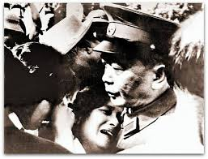
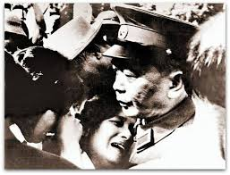
Lăng Chủ Tịch
Thể theo ý nguyện thiết tha của toàn Đảng, toàn dân, trong phiên họp sáng 29/11/1969, Bộ Chính trị Trung ương Đảng đã bàn và quyết định: Với tấm lòng kính yêu vô hạn và đời đời nhớ ơn Chủ tịch Hồ Chí Minh, chúng ta phải thực hiện đến mức tốt nhất nhiệm vụ giữ gìn lâu dài thi hài Chủ tịch Hồ Chí Minh và xây dựng Lăng của Người.
Đảng và Nhà nước ta quyết định xây dựng lăng của Người tại Quảng trường Ba Đình lịch sử, nơi Người đọc bản Tuyên ngôn độc lập, tuyên bố thành lập nước Việt Nam Dân chủ Cộng hòa.
Thủ tướng Phạm Văn Đồng đã ký quyết định lấy ngày 2/9/1973 là ngày khởi công và ngày 2/9/1975 là ngày hoàn thành, đưa công trình vào hoạt động.
Việc xây dựng Lăng của Người có sự giúp đỡ nhiệt tình của Chính phủ Liên Xô. Từ ngày 9-23/1/1970, Chính phủ Liên Xô đã cử một đoàn gồm 7 cán bộ sang Việt Nam để bàn về việc thiết kế Lăng Chủ tịch Hồ Chí Minh. Chỉ trong một tuần, các chuyên gia Liên Xô và Việt Nam đã soạn thảo xong bản “Dự thảo nhiệm vụ thiết kế Lăng Chủ tịch Hồ Chí Minh.”
Sau 700 ngày đêm lao động của cán bộ, chiến sỹ, công nhân viên xây dựng Lăng, và đặc biệt là có sự giúp đỡ bằng sức người và sức của của Đảng, Chính phủ và nhân dân Liên Xô, chúng ta đã vượt qua trăm nghìn gian khó xây dựng nên ngôi nhà vĩnh hằng của Bác.
Sáng 29/8/1975, Đảng và Nhà nước đã tổ chức lễ trọng thể khánh thành Lăng Chủ tịch Hồ Chí Minh và đưa Người về an nghỉ mãi mãi ở nơi đây, giữa trái tim của toàn dân tộc.
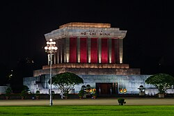